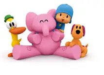
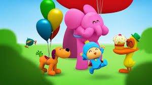

Pocoyo é uma série de animação infantil espanhola-britânica produzida pela Zinkia Entertainment, com co-produção da Granada Kids nas duas primeiras temporadas. Foram produzidas cinco temporadas, cada uma contendo 52 episódios de sete minutos de duração.
Na versão em inglês o narrador recebe a voz de Stephen Fry nas duas primeiras temporadas. Em Portugal, a voz do narrador é feita pelo ator Rui Luís Brás. No Brasil, o narrador é Ricardo Fabio.